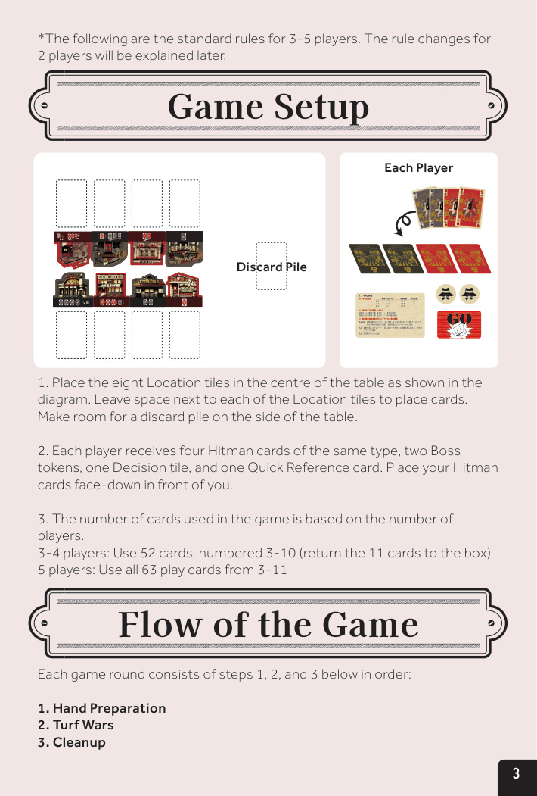
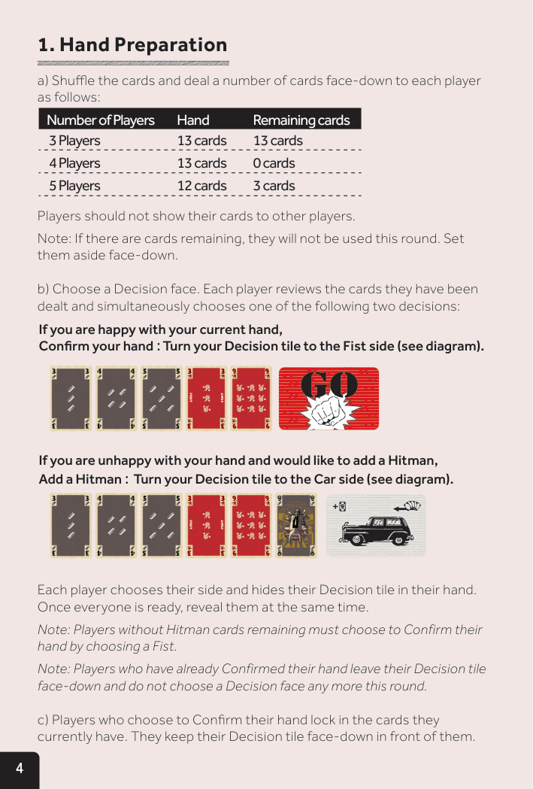
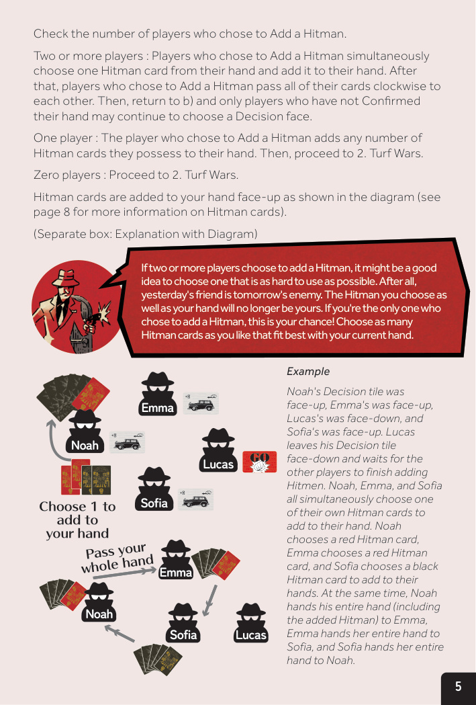
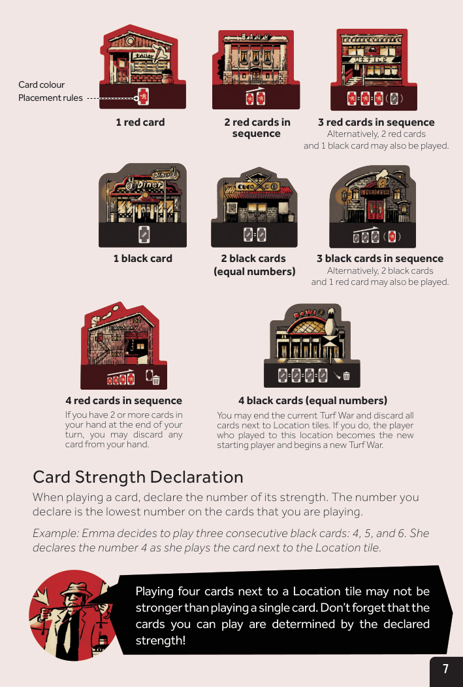
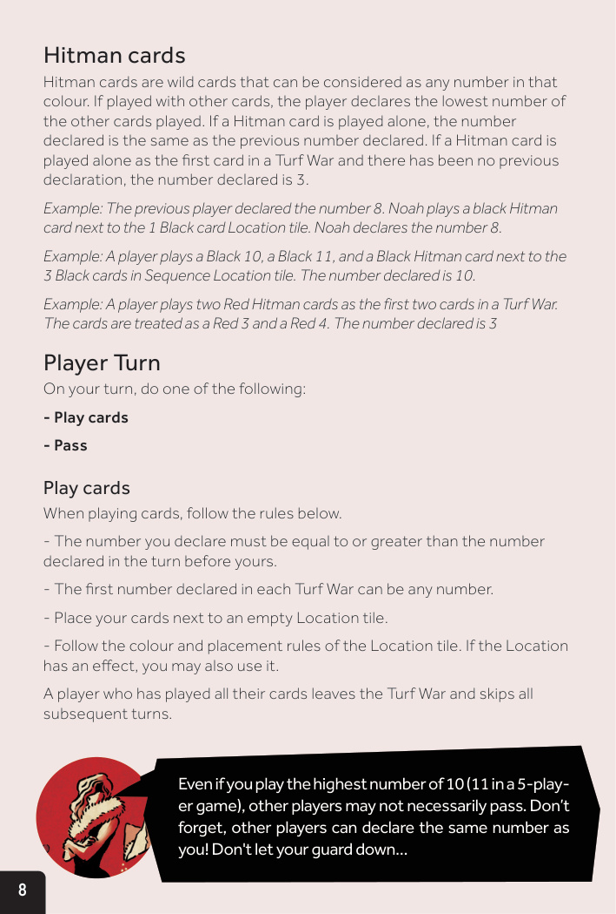
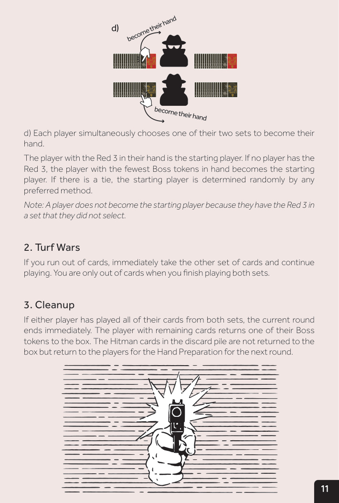
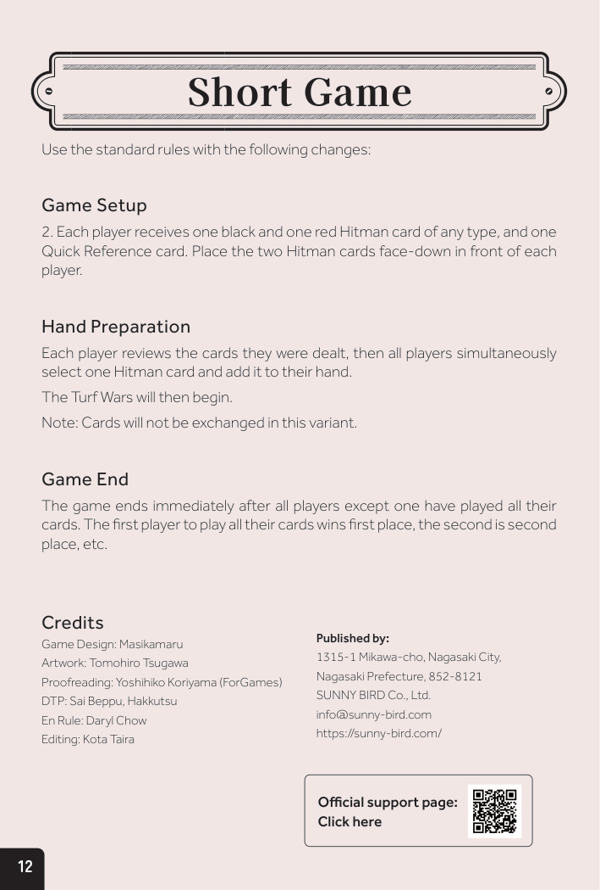

1故事
地盘之争即将打响。
凭你现在的阵容是赢不了的。你没法和弱者合作；光靠好看的外表也活不下来。在这场生意里，要么快，要么死。
这一次，笑到最后的会是我们……
你将率领一支帮派团队投入地盘之争，尽可能快地让他们占据空置的地点。如果你不满意发到的牌，可以把强大的杀手牌加入手牌。然而，雇杀手可能意味着要和其他玩家交换牌。每个地点都有自己的出牌规则，你不能和别人出同样的牌。如果你没法把手里的牌全部出完，就会失去 1 枚大佬标记。失去两枚大佬标记，你就输了。你的团队能活到最后吗？
地盘之争即将打响。
凭你现在的阵容是赢不了的。你没法和弱者合作；光靠好看的外表也活不下来。在这场生意里，要么快，要么死。
这一次，笑到最后的会是我们……
你将率领一支帮派团队投入地盘之争，尽可能快地让他们占据空置的地点。如果你不满意发到的牌，可以把强大的杀手牌加入手牌。然而，雇杀手可能意味着要和其他玩家交换牌。每个地点都有自己的出牌规则，你不能和别人出同样的牌。如果你没法把手里的牌全部出完，就会失去 1 枚大佬标记。失去两枚大佬标记，你就输了。你的团队能活到最后吗？
| 颜色 | 数字 | 数量 |
|---|---|---|
| 黑（子弹） | 3 / 4 | 各 2 张 |
| 黑（子弹） | 5 / 6 | 各 3 张 |
| 黑（子弹） | 7 / 8 | 各 4 张 |
| 黑（子弹） | 9 / 10 | 各 5 张 |
| 黑（子弹） | 11 | 6 张 |
| 红（玫瑰） | 3 | 1 张 |
| 红（玫瑰） | 4 / 5 | 各 2 张 |
| 红（玫瑰） | 6 / 7 | 各 3 张 |
| 红（玫瑰） | 8 / 9 | 各 4 张 |
| 红（玫瑰） | 10 / 11 | 各 5 张 |

每局游戏由以下三个阶段按顺序循环组成：
洗牌后按下方数量将牌面朝下发给每位玩家：
| 玩家数 | 使用的牌 | 手牌数 | 剩余牌 |
|---|---|---|---|
| 3 人 | 3-10 | 13 张 | 13 张 |
| 4 人 | 3-10 | 13 张 | 0 张 |
| 5 人 | 3-11 | 12 张 | 3 张 |
每位玩家审视自己发到的牌，同时选择以下两种决策之一：
如果你满意当前手牌。
→ 把决策板块翻到拳面。
如果你不满意手牌，希望加杀手。
→ 把决策板块翻到车面。
每位玩家选择一面，藏在手中；准备就绪后，同时翻开。

所有选择添加杀手的玩家同时从各自手牌中选 1 张杀手牌加入手牌。然后这些玩家把各自的全部手牌顺时针传递给下一位选择添加杀手的玩家。之后回到 §6 b)，仅尚未确认手牌的玩家可继续选择决策面。
该玩家可将自己拥有的任意张数的杀手牌加入手牌。然后进入 §8 地盘争夺。
直接进入 §8 地盘争夺。
杀手牌以面朝上的方式加入手牌（详见 §11）。
【示例】Noah 的决策板块面朝上，Emma 同样面朝上，Lucas 面朝下，Sofia 面朝上。Lucas 把他的决策板块保持面朝下，等待其他玩家完成添加。Noah、Emma 和 Sofia 同时从自己的杀手牌中各选 1 张加入手牌：Noah 选了红杀手，Emma 选了红杀手，Sofia 选了黑杀手。同时，Noah 把他的全部手牌（含刚加的杀手）传给 Emma，Emma 把她的全部手牌传给 Sofia，Sofia 把她的全部手牌传给 Noah。
然后 Noah、Emma、Sofia 再次同时隐藏并翻开决策板块。Noah 的面朝上，Emma 和 Sofia 的面朝下。Noah 可把任意张杀手牌加入手牌（图中他加了 1 张黑 + 1 张红）。

任何手中有红 3的玩家必须将其翻开并立即收回手牌。该玩家成为本局起始玩家。
起始玩家先出牌，之后玩家按顺时针轮流行动，选择出牌或跳过。直到除 1 人外的所有玩家都选择跳过，这一轮出牌即结束，称为一轮地盘争夺。
地盘争夺持续进行，直到除 1 人外的所有玩家都把手牌出完。
出牌方式：选择一块空置的地点板块，把牌出在该板块旁边。地点板块决定可出的牌的颜色和组合规则。
每块地点板块有自己的颜色和出牌规则，必须按规则出牌。部分地点板块还有特殊效果。

出牌时声明牌力数字。声明的数字是你所出牌中最小的数字。
【示例】Emma 决定出 3 张连续的黑牌：4、5、6。她把牌出在地点板块旁边时声明数字 4。
回合结束时，若你手牌中还有 ≥ 2 张牌，可弃掉手中任意 1 张牌。
你也可以结束当前地盘争夺，弃掉所有地点板块旁的牌。这样，最后出牌到这个地点的玩家成为新起始玩家，并开始新一轮地盘争夺。

杀手牌是万能牌，可视为该颜色的任意数字。若与其他牌一起出，玩家声明其他牌中最小数字。若杀手牌单独出，声明的数字等于上一玩家声明的数字。若杀手牌作为本轮第一张牌单独出且之前无声明，声明数字为 3。
【示例 1】上家声明 8。Noah 在"1 张黑牌"地点旁出了一张黑杀手牌。Noah 声明数字 8。
【示例 2】一名玩家在"3 张黑牌（连续）"地点旁出了黑 10、黑 11、黑杀手。声明数字为 10。
【示例 3】一名玩家在地盘争夺首轮出了 2 张红杀手牌。这两张牌被视为红 3 和红 4，声明数字为 3。
起始玩家在第一回合不能选择跳过。
玩家若无法或不想出牌，可选择跳过。一旦跳过，本轮内不再行动，直到除 1 人外的所有玩家都跳过。
当除 1 人外的所有玩家都跳过后，弃掉所有地点板块旁的牌。最后出牌的玩家成为新起始玩家，出牌到任意地点板块旁，开始新一轮地盘争夺。若最后出牌的玩家已出完手牌，则按顺时针方向下一位仍有手牌的玩家成为起始玩家。
当除 1 人外的所有玩家都出完手牌时，当前地盘争夺立即结束。未出完手牌的玩家将 1 枚大佬标记放回盒中。
然后检查每位玩家剩余的大佬标记。若有人标记为 0，进入 §14 游戏结束。
否则，每位玩家弃掉手中的剩余牌和地点板块旁的全部牌到弃牌堆。将弃牌堆中的杀手牌全部放回盒中（本局不再使用）。
之后把弃牌堆和（若有）剩余的牌混在一起，回到 §5 手牌准备，开始新一局。若你面前还有面朝下的杀手牌，保留原样。
没有大佬标记剩余的玩家输掉游戏。所有剩余玩家获胜。
城市的城市的和平终于回来了。但没人知道这份和平能维持多久……
3-5 人局的标准规则保持不变，仅做如下调整：
手中有红 3的玩家成为起始玩家。若都无红 3，手中大佬标记最少的玩家成为起始玩家；并列则随机。
如果牌用完了，立即拿起另一套牌继续。你只有在两套都出完时才算真正用完。
若任一玩家已出完两套的全部牌，当前轮立即结束。仍有剩余牌的玩家将 1 枚大佬标记放回盒中。弃牌堆中的杀手牌不放回盒中，而是放回玩家手中，进入下一轮手牌准备。

在标准规则基础上做如下调整：
每位玩家审视自己发到的牌，然后所有玩家同时选 1 张杀手牌加入手牌。
然后进入地盘争夺阶段。
当除 1 人外的所有玩家都出完手牌时，游戏立即结束。最先出完手牌的玩家获第一名，其次第二名，依此类推。
设计：Masikamaru
插画：Tomohiro Tsugawa
校对：Yoshihiko Koriyama（为 Games）
桌面出版：Sai Beppu、Hakkutsu
英文规则：Daryl Chow
编辑：Kota Taira
出版：SUNNY BIRD Co., Ltd.
1315-1 Mikawa-cho, Nagasaki City, Nagasaki Prefecture, 852-8121
info@sunny-bird.com
https://sunny-bird.com/

翻译规则严格遵循"专名 vs 普通术语"桌游本地化准则：人名 / 地名 / 公司名保留英文；其他专名（卡牌名 / 能力名 / 大佬 名 / 章节标题 / 制作标签 / 普通术语）全部译为中文。
保留英文的专名：SUNNY BIRD Co., Ltd.、Nagasaki City、Nagasaki Prefecture、Mikawa-cho、Masikamaru、Tomohiro Tsugawa、Yoshihiko Koriyama、Daryl Chow、Kota Taira、Sai Beppu、Hakkutsu。